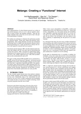

Papers which won prizes
Unikernels: Library Operating Systems for the Cloud - A. Madhavapeddy, R. Mortier, C. Rotsos, D. Scott, B. Singh, T. Gazagnaire, S. Smith, S. Hand, J Crowcroft won a HIPEAC 2013 award presented at Eighteenth International Conference on Architectural Support for Programming Languages and Operating Systems (ASPLOS 2013) We present unikernels, a new approach to deploying cloud services via applications written in high-level source code. Unikernels are single-purpose appliances that are compile-time specialised into standalone kernels, and sealed against modification when deployed to a cloud platform. In return they offer significant reduction in image sizes, improved efficiency and security, and should reduce operational costs. Our Mirage prototype compiles OCaml code into unikernels that run on commodity clouds and offer an order of magnitude reduction in code size without significant performance penalty. The architecture combines static type-safety with a single address-space layout that can be made immutable via a hypervisor extension. Mirage contributes a suite of type-safe protocol libraries, and our results demonstrate that the hypervisor is a platform that overcomes the hardware compatibility issues that have made past library operating systems impractical to deploy in the real-world. This describes the awesomeness of the MirageOS open-source library OS which hosts this website! |
|
|  | Melange: creating a functional internet - A. Madhavapeddy, A. Ho, T. Deegan, D. Scott, R. Sohan Best student paper at EuroSys 2007 We present a framework based in OCaml called ``Melange'' which uses strong static typing and generative meta-programming to eliminate a serious class of bugs from Internet servers without paying a performance penalty. We report on fully-featured SSH and DNS servers and measure greater throughput, lower latency and increased flexibility all with source code which is more succinct than the C equivalents: OpenSSH and BIND. Quite a fun piece of work which shows how well you can do by throwing away the old designs and starting again, with benefit of hindsight. Seems to evoke a love/hate response in readers. |
Spatial Security Policies for Mobile Agents in a Sentient Computing Environment - D. Scott, A. Beresford, A. Mycroft Won the European Association of Software Science and Technology (EASST) Best Software Science Paper award at FASE 2003 (part of ETAPS 2003) in Warsaw, Poland. A Sentient Computing environment is one in which the system is able to perceive the state of the physical world and use this information to customise its behaviour. Mobile agents are a promising new programming methodology for building distributed applications. We presented: (i) a simple location-based mechanism for the creation of security policies to control mobile agents; (ii) a method of writing applications for a pervasive computing environment through the use of mobile agents and (iii) a demonstration of the applicability of recent theoretical work using ambients to model mobility. A fun project which combined ceiling-mounted ultrasonic location sensors and a very small amount of theory |
|
 |
Abstracting Application-Level Web Security - D. Scott, R. Sharp Best Paper at the 11th International World-Wide Web conference (WWW2002) Application-level web security refers to vulnerabilities inherent in the code of a web-application (irrespective of the technologies in which it is implemented or the security of the systems on which it is build). Many application-level vulnerabilities have been exploited with serious consequences: hackers have tricked e-commerce sites into shipping goods for no charge, accounts have been hijacked and confidential information leaked. We present new tools and techniques which allow the abstraction of security policy from large web-applications in heterogeneous multi-platform environments and analyse their usefulness. I think people liked this paper because of its practical focus and good timing. It's worth reading if only for the jokes! |
Past projects
Past projects include:- The Ubiquitous Interaction Devices (UID) project encompassing
- SpotCode Interfaces
- Audio Networking
- Bluetooth-based Mobile Services
- Location-aware computing including
- Analysing participation in voluntary location systems
- Location-aware gaming
- Security
- Application-level policies for web-applications
- Spatial policies for restricting mobility
Refereed Reports
| 2007 |
A. Madhavapeddy, A. Ho, T. Deegan, D. Scott, R. Sohan Melange: Towards a "functional" Internet |
Appeared in EuroSys 2007, March 2007 |
|
| 2006 |
E. Toye, R. Sharp, A. Madhavapeddy, D. Scott, E. Upton, A. Blackwell Interacting with Mobile Services: An Evaluation of Camera-Phones and Visual Tags |
In Personal and Ubiquitous Computing Journal, February 2006 |
|
| 2005 |
A. Madhavapeddy, R. Sharp, D. Scott, A. Tse Audio Networking: The Forgotten Wireless Technology |
In IEEE Pervasive Computing (volume 4, number 3), July-September 2005 |
|
| 2005 |
A. Madhavapeddy, D. Scott, R. Sharp SPLAT: A Tool for Model-Checking and Dynamically Enforcing Abstractions |
In the proceedings of the 12th Internation SPIN Workshop on Model Checking of Software (SPIN 2005) |
|
| 2005 |
E. Toye, R. Sharp, A. Madhavapeddy, D.Scott Using Smart Phones to Access Site-Specific Mobile Services |
In the special issue of IEEE Pervasive Computing on the Smart Phone: A First Platform for Pervasive Computing, April-June 2005 |
|
| 2005 |
A. Madhavapeddy, D. Scott On the Challenge of Delivering High-Performance, Dependable, Model-Checked Internet Servers |
In the proceedings of the First Workshop on Hot Topics in System Dependability (HotDep-05), June 2005. |
|
| 2005 |
D. Scott, R. Sharp, A. Madhavapeddy, E. Upton Using Camera-Enabled Personal Devices to Access Bluetooth Mobile Services |
ACM Mobile Computing and Communications Review (MC2R), January 2005, Volume 9, Number 1, Pages 41-53. |
|
| 2004 |
D. Scott Abstracting Application-Level Security Policy for Ubiquitous Computing |
PhD thesis, University of Cambridge |
|
| 2004 |
K. mansley, A. Beresford, D. Scott The Carrot Approach: Encouraging use of location systems |
This paper describes techniques to encourage (rather than force) the use of location-aware apps in the face of declining participation. Presented at The Sixth International Conference on Ubiquitous Computing (UBICOMP 2004) in Nottingham, UK in Septempter 2004 |
|
| 2004 |
K. Mansley, D. Scott, A. Tse, A. Madhavapeddy Feedback, Latency, Accuracy: Exploring Tradeoffs in Location-Aware Gaming |
Presented at NetGames 2004, in conjunction with ACM SIGCOMM 2004, August 2004 |
|
| 2003 |
A. Madhavapeddy, D. Scott, R. Sharp Context-Aware Computing with Sound |
This paper describes simple techniques for audible data communication and shows how these channels, although low bandwidth, may be used to create cheap context-aware applications. Presented at The Fifth International Conference on Ubiquitous Computing (UBICOMP) 2003 in Seattle, Washington. |
|
| 2003 |
D. Scott, R. Sharp Specifying and Enforcing Application-Level Web Security Policies |
Invited contribution to Jul/Aug 2003 IEEE Transactions in Knowledge and Data Engineering (TKDE) |
|
| 2003 |
A. Madhavapeddy, A. Mycroft, D. Scott, R. Sharp The Case For Abstracting Security Policies |
This paper describes an infrastructure for imposing Stateful Syscall Policies on existing programs. Presented at The 2003 International Conference on Security and Management |
|
| 2003 |
D. Scott, A. Beresford, A. Mycroft Spatial Policies for Sentient Mobile Applications |
This paper describes a runtime for implementing a Spatial Policy system for sentient applications built from Mobile Agents Presented at IEEE Policy 2003. |
|
| 2003 |
D. Scott, A. Beresford, A. Mycroft Spatial Security Policies for Mobile Agents in a Sentient Computing environment |
Presented at FASE 2003 (part of ETAPS 2003) in Warsaw, Poland. Won the European Association of Software Science and Technology (EASST) Best Software Science Paper award.
|
|
| 2002 |
D. Scott, R. Sharp Developing Secure Web Applications (C)2002 IEEE Internet Computing |
IEEE Internet Computing Magazine in the Nov/Dec 2002 special issue on The Technology of Trust |
|
| 2002 |
D. Scott, R. Sharp Abstracting Application-Level Web Security Please read the errata |
Proceedings of the 11th International World-Wide Web conference (WWW2002) where it also received the "Best Paper" award. |
|
| 2001 |
J. Weatherall, D. Scott Mobile Computing with Python |
Proceedings of the 9th International Python Conference (Python9), March 2001 |
Unrefereed Reports
2005 |
D. Scott Abstracting application-level security policy for ubiquitous computing |
Technical Report UCAM-CL-TR-613, University of Cambridge |
|
2004 |
E. Toye, A. Madhavapeddy, R. Sharp, D. Scott, A. Blackwell, E. Upton Using camera-phones to interact with context-aware mobile services |
Technical report UCAM-CL-TR-609, University of Cambridge |
|
| 2002 |
D. Scott, R. Sharp SPECTRE: A Tool for Inferring, Specifying and Enforcing Web-Security Policies |
This paper describes the implementation of the dynamic policy enforcement tool called "SPECTRE" |
|
| 2002 |
D. Scott, R. Sharp The SWAP Project |
This poster describes the overall aim of the SWAP Project |
Videos
| 2003 |
A. Madhavapeddy, D. Scott, R. Sharp Audio Notes |
This video demonstrates how audionotes (special sequences of DTMF tones) may be used to store and retrieve documents via standard audio recording equipment. |
|
| 2003 |
A. Madhavapeddy, D. Scott, R. Sharp Audio Authentication |
This video demonstrates how a capability to access a resource may be sent as a melodic ring tone via SMS to a mobile phone handset. |
|
| 2003 |
A. Madhavapeddy, D. Scott, R. Sharp Room-grained Location |
This video demonstrates how audio beacons operating at approximately 21kHz (imperceptible to humans) may be used to easily infer room-grained location. |
|
| 2003 |
A. Madhavapeddy, D. Scott, R. Sharp Telephone Attachments |
This video demonstrates how document references may be easily transmitted across telephone networks as sequences of DTMF tones. |